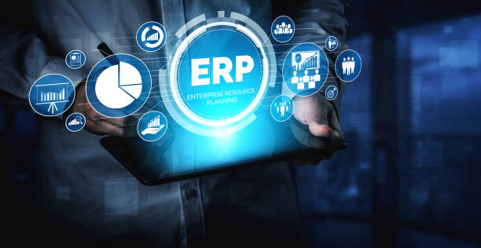
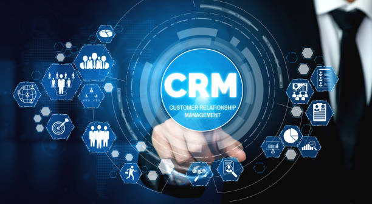

Somos transformación digital
Las herramientas de trabajo de una empresa acortan a medio-largo plazo el tiempo invertido en el tratamiento de la información, aunque en muchos casos la mala elección de un software a medida dispara el coste económico y el tiempo invertido por el personal, ya sea por la inversión en licencias de uso como por la elección de un sistema que no se adapta a nuestras necesidades o que no permite una ampliación adaptada a nuestro proyecto.
En Agile llevamos desarrollando software a medida adaptado 100% a las necesidades de nuestros clientes. Y lo preparamos con vistas a ampliaciones futuras, así el coste de ampliación y mejora se reduce, porque nosotros hemos desarrollado el software y conocemos cada detalle de su funcionamiento respecto a tus necesidades.
Aprovechamos nuestra experiencia para aportar ideas de valor añadido, para que el coste en desarrollo de software deje de ser un coste y se convierta en una inversión. Conseguimos que nuestros clientes dejen de hablar de un software que no usan y comiencen a pensar en cómo mejorar otros procesos de su empresa, incluso departamentos enteros.
Así es como nos convertimos en actores principales de su transformación digital. Aportando valor y agilidad con nuestra metodología. Siendo capaces de integrarnos con otros programas y herramientas y acompañando desde la toma de datos del alcance inicial, durante el análisis y desarrollo hasta el post arranque.
¿Te gustaría saber cómo grandes supermercados controlan sus máquinas y los palets que envuelven cada día? ¿Y cómo se fabrican los AGVs que utilizan en grandes factorías como Renault? ¿O cómo funciona el servicio técnico de Gas Natural o cómo se fumiga el grano de grandes buques? Nosotros podemos contarte acerca de todos estos desarrollos a medida y muchos más, de clientes y amigos que han confiado, y siguen confiando en nosotros.
Algunos de nuestros desarrollos de software a medida
-

Integraciones con ERP, API y ahorro de licencias
¿Sabías que con nuestras integraciones y desarrollos a medida puedes ahorrar costes en licencias? Tenemos una amplia experiencia integrando software de terceros, permitiendo así más amplitud en nuestros desarrollos. Como por ejemplo el caso de una APP en Android e iOS conectada con un portal web de gestión interna, y compartiendo toda la información actualizada con el ERP.
Integramos con Microsoft Dynamics Navision, un gestor con opciones flexibles que se adaptan a tu tipo de empresa, y SAP, el ERP líder, entre muchos otros. Integrar contra este tipo de herramientas te permitirá, entre otras cosas, agilizar procesos de compra y logística, gestionar y optimizar las ventas, fidelizar a tus clientes estables y potenciales y automatizar de forma sencilla las acciones repetitivas. -

Desarrollo CRM - Web del Vendedor
Aunque un CRM tiene la amplitud que cada empresa necesita, siempre estará basado en la gestión de relaciones con tus clientes. Por ellos somos capaces con nuestros desarrollos de adaptar esas necesidades a una herramienta ágil y fácil de usar.
Tenemos experiencia en el desarrollo de todo tipo de portales CRM, desde la gestión comercial pura, con sus contactos y oportunidades hasta procesos de captación, venta y fidelización más avanzados.
Tú pones la idea, nosotros la hacemos realidad. -
Desarrollo Extranet - Web del Cliente
Las relaciones con tus clientes cambian, cada vez requieren mayor acceso a la información. Imagina poder dársela en tiempo real y ofrecerles una herramienta útil como valor añadido a tu servicio.
Entre nuestros casos de éxito existen muchos ejemplos de empresas que han apostado por hacer a sus clientes partícipes de su transformación digital, procesos y resultados, pudiendo intercambiar información útil, informes, gráficos, documentación, facturas y ofreciendo vías de comunicación más actuales. -
Desarrollo Intranet - Web del empleado
Mejorar los procesos internos de la empresa es una de las principales formas de optimizar los recursos, detectar los problemas y aumentar el rendimiento general de cada departamento. Reduciendo el tiempo dedicado a la búsqueda de recursos, gestión de solicitudes y comunicaciones aumentamos la rentabilidad y reducimos costes. Ofrecer un entorno de trabajo más capaz y dinámico fideliza a los empleados y aporta un valor diferencial. En Agile podemos ayudarte a mejorar cualquier proceso, desde centros de documentación internos, gestión de flujos de aprobación y solicitudes hasta integraciones avanzadas con Sharepoint® de Microsoft, por ejemplo.
-

Desarrollo SAT - Gestión asistencia técnica y operaciones
¿Imaginas poder tener bajo control todas las gestiones referentes a la asistencia técnica que ofrece tu negocio? Tenemos amplia experiencia desarrollando software a medida para empresas centradas en el SAT. Desde la planificación de los trabajos, rutas y geolocalización, pasando por la gestión de incidencias, gestión online de partes de trabajo, hasta la publicación automatizada de informes de costes y desplazamientos, dietas, mapas de actividad, consumo de productos y picking. Como también somos desarrolladores de APPs a medida podemos abarcar cualquier tipo de desarrollo relacionado con los trabajos en movilidad.
-
Desarrollo de software como servicio - SaaS
El desarrollo de software como servicio es una de las principales formas de negocio online. Hemos desarrollado desde software propio para uso personal y hasta software a medida para cursos online de inglés para niños, estudiantes y adultos. Así como todo lo necesario para poder llevar tu idea de producto o servicio a internet. Con amplia experiencia en integraciones con pasarelas de pago Paypal o TPVv de Redsys, podemos automatizar procesos de licenciamiento, pedidos y pagos, avisos y notificaciones, para que puedas tener todo bajo control.